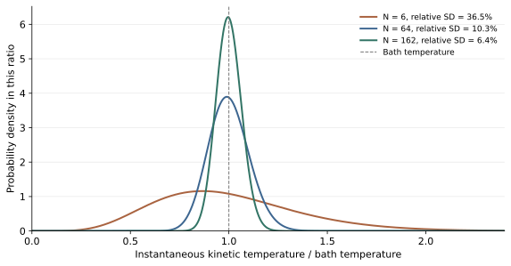
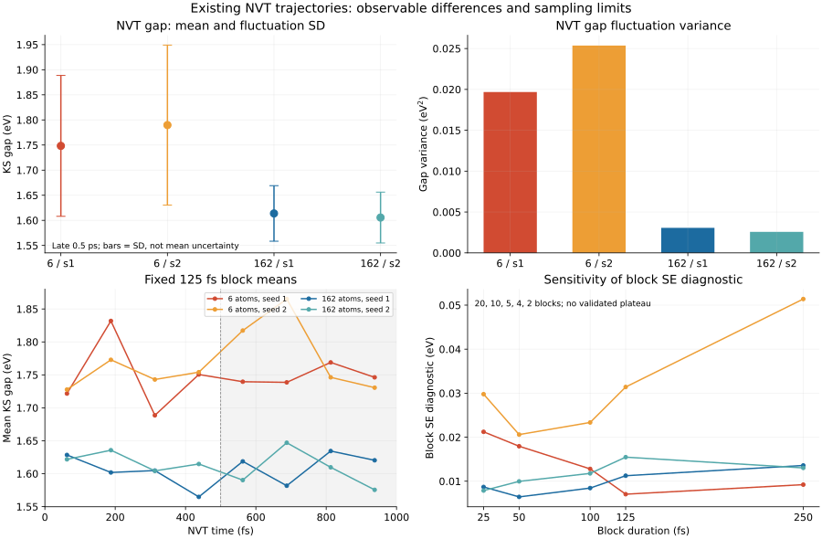
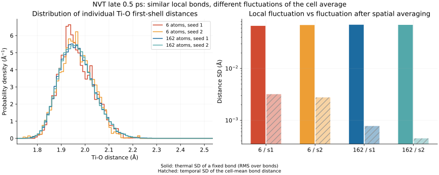
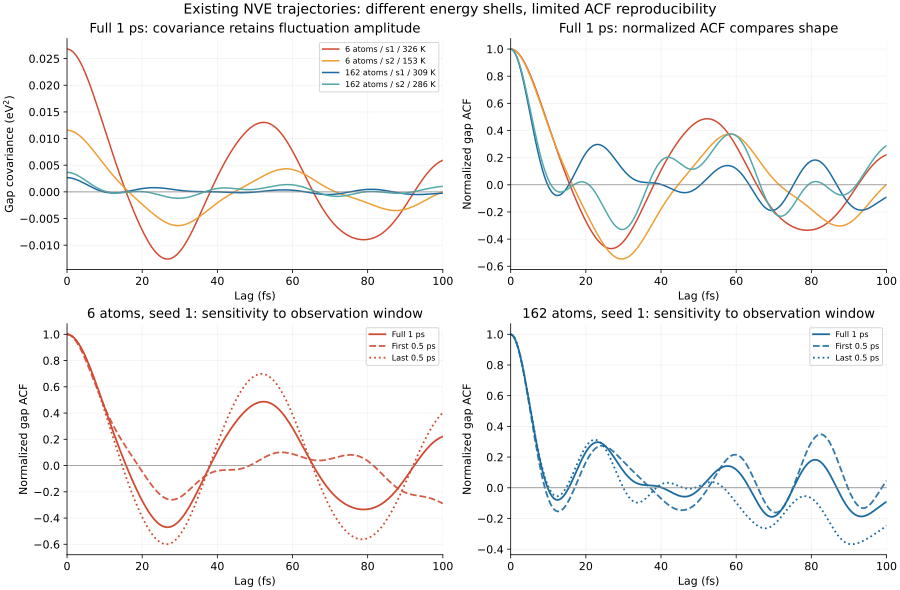
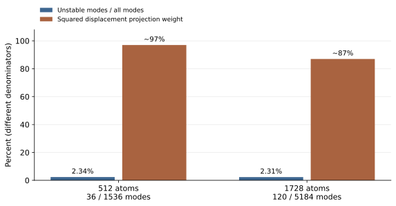
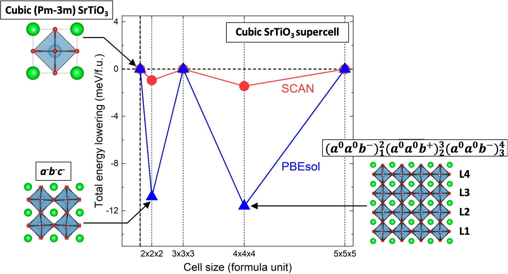
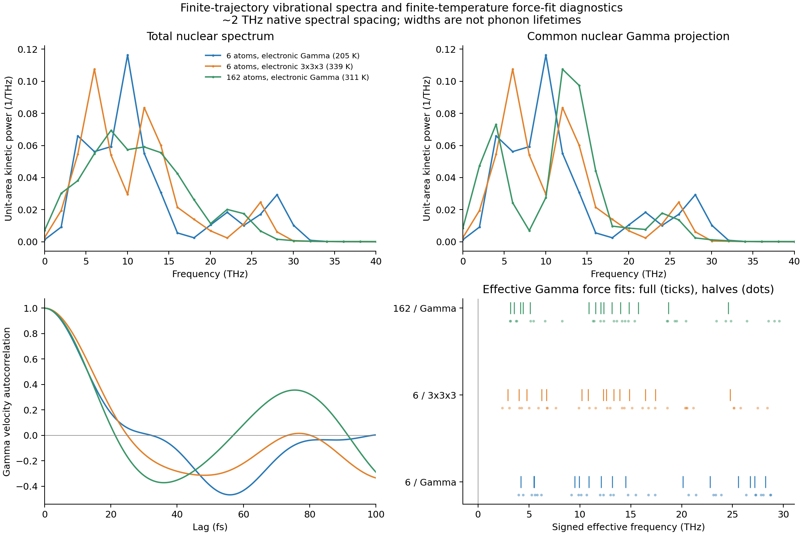

Molecular Dynamics / TiO₂ Tests / Literature Study
MD Supercells: Temperature, k Points, and Nuclear Modes
A primitive-cell NVT trajectory can have large temperature fluctuations even when its kinetic-energy distribution is correct. The same trajectory can still give a poor approximation to a bulk observable because it excludes most nuclear wavevectors. These are different questions: does the algorithm sample its finite system correctly, and does that finite system represent the material property of interest?
This note combines our existing rutile TiO₂ tests with two published studies: finite-wavevector soft modes in photoexcited silicon, and supercell restrictions on octahedral rotations in perovskites. The TiO₂ section reports calculations already completed in this research session. The literature sections use the papers' published results, with a figure for each; neither study was reproduced here.
1. What a fluctuating NVT temperature means
The temperature reported at each MD step is usually a kinetic-energy estimator. Let \(K\) be the nuclear kinetic energy, \(k_B\) the Boltzmann constant, and \(f\) the number of active momentum degrees of freedom. Define
The bath temperature \(T_0\) is a parameter of the canonical distribution. It is not a requirement that this instantaneous estimator remain close to \(T_0\) at every step. For classical nuclei with quadratic kinetic energy, the canonical momentum density is Gaussian. In independent mass-weighted momentum coordinates \(p_j\),
Consequently, the dimensionless sum of squared Gaussian variables follows a chi-square distribution:
This follows from the mean \(f\) and variance \(2f\) of the chi-square distribution. It is also the kinetic-energy distribution that a canonical thermostat must preserve; see Bussi, Donadio, and Parrinello. A correct temperature mean is necessary, but the distribution and sampling of coordinates require additional checks.
For an unconstrained periodic solid with the total center-of-mass momentum removed, \(f=3N-3\), where \(N\) is the number of atoms. Do not subtract molecular rotational degrees of freedom from a periodic solid. Other constraints change \(f\), and a program's printed convention must be checked separately.
| Atoms | Momentum degrees of freedom | Canonical relative standard deviation | Standard deviation at 300 K |
|---|---|---|---|
| 6 | 15 | 36.5% | 110 K |
| 64 | 189 | 10.3% | 31 K |
| 162 | 483 | 6.44% | 19 K |
These are analytic canonical widths, not measured trajectories. A six-atom solid can therefore show large excursions without a thermostat failure. Requiring a relative standard deviation below 10% would require \(f\geq200\), or at least 68 atoms under this particular convention. That does not guarantee that every frame lies within a ±10% band, and it is not a universal minimum size for MD.


The uncertainty of a time-averaged temperature is a different quantity. If an equilibrated trajectory supplies \(M_{\mathrm{eff}}\) effectively independent observations, its mean has an uncertainty of order \(\sigma_T/\sqrt{M_{\mathrm{eff}}}\). Correlated adjacent frames do not count as independent observations. Thermostat coupling changes the correlation time and may affect mixing; deliberately suppressing the expected kinetic-energy variance does not establish better canonical sampling. Small, nearly harmonic systems can also expose ergodicity problems in deterministic thermostats.
2. Our TiO₂ tests: which observables change?
The calculations behind this discussion used bulk rutile TiO₂: a six-atom primitive cell and its \(3\times3\times3\), 162-atom supercell. The existing VASP trajectories used a 0.5 fs timestep, ENCUT = 400 eV and EDIFF = \(10^{-6}\) eV. This section reports work already completed in the research session; no new material calculation was run for this article. The 162-atom cell is a finite reference, not an established thermodynamic limit.
The initial three-scheme comparison
The first comparison retained the inherited preparation: 0.5 ps NVT with velocity rescaling every ten steps, followed by 0.5 ps NVE. This preparation was not certified as canonical sampling. It compared primitive electronic Gamma, a primitive Gamma-centered \(3^3\) electronic mesh, and supercell electronic Gamma.
| Historical NVE scheme | Mean T / K | Mean KS gap ± SD / eV | Mean-structure displacement RMS / Å |
|---|---|---|---|
| 6 atoms, electronic Gamma | 204.51 | 3.36036 ± 0.12122 | 0.3671 |
| 6 atoms, electronic \(3^3\) | 339.14 | 1.86262 ± 0.10481 | 0.0214 |
| 162 atoms, electronic Gamma | 310.64 | 1.61878 ± 0.04576 | 0.0182 |
The last column compares each time-averaged structure with the common starting crystal after removing overall translation; it is not an instantaneous thermal displacement. The primitive Gamma trajectory moved around a substantially different mean structure. An initial-configuration check found oxygen force RMS values of about 5.18 eV/Å at primitive Gamma, 0.192 eV/Å with the primitive \(3^3\) mesh, and 0.196 eV/Å in the replicated cell. Small reconstruction and numerical-grid differences remain in this check.
The gap change also cannot be explained mainly by searching additional k points for a lower conduction edge: on the same primitive \(3^3\) trajectory, the mean Gamma direct gap exceeded the sampled-k spectral gap by only 13.99 meV. This is much smaller than the approximately 1.50 eV difference between the two primitive trajectories. Electronic integration changed the forces and the structures sampled. These short, differently heated trajectories do not establish electronic or nuclear size convergence.
Matched thermostat settings: gaps differ more than local bonds
A later test used the primitive \(3^3\) electronic mesh and supercell Gamma, each with two velocity and stochastic seeds. All four NVT inputs used the same Langevin settings: MDALGO = 3, friction 10 ps⁻¹ for Ti and O, and a 300 K target. Each seed completed 1 ps NVT followed by 1 ps NVE. The initial coordinates were shared and not already thermalized, so different seeds alone do not establish independent equilibrium samples.
The fixed NVT comparison window is steps 1001–2000, the final 0.5 ps. It was chosen by time, not by selecting frames close to 300 K, and remains a candidate sampling window rather than certified equilibrium. In this Langevin implementation the reported total kinetic temperature uses \(3N\) degrees of freedom; it is distinct from the center-of-mass-removed convention in Section 1 and the historical table above. The primitive temperature SDs are 77.12 and 88.53 K, versus 20.34 and 16.57 K for the supercell.
The gap is the sampled-k KS spectral gap, \(E_g=\min_k\epsilon_{\mathrm{CBM},k}-\max_k\epsilon_{\mathrm{VBM},k}\), at fixed electron count. Supercell folding is included. It is not an optical or quasiparticle gap. All ± values below are within-trajectory population SDs, not uncertainty bars on the means.
| NVT, final 0.5 ps | Mean T / K | Mean gap ± SD / eV | Mean Ti–O / Å | Single-bond thermal SD / Å |
|---|---|---|---|---|
| 6 atoms / seed 1 | 284.25 | 1.74832 ± 0.14028 | 1.964216 | 0.066436 |
| 6 atoms / seed 2 | 275.44 | 1.78979 ± 0.15924 | 1.964605 | 0.068883 |
| 162 atoms / seed 1 | 288.66 | 1.61374 ± 0.05533 | 1.965612 | 0.069767 |
| 162 atoms / seed 2 | 301.15 | 1.60558 ± 0.05070 | 1.965391 | 0.069333 |
Equal-weighting the two seeds, the primitive gap is higher by 0.15939 eV; the ratio of mean within-seed gap variances is 8.00. Between-seed mean differences are not included in that variance ratio. The final 0.25 ps retains a gap difference even when both primitive mean temperatures are close to 300 K, but this is still not a matched-temperature equilibrium comparison. One primitive seed's two quarter-picosecond mean gaps differ by about 0.103 eV, and the block-error diagnostic has no established plateau.


Local geometry is less sensitive in this sample. The equal-seed mean Ti–O distance differs by only about 0.0011 Å, and individual-bond thermal SDs remain near 0.066–0.070 Å in both cells. This SD first removes each fixed bond's own time mean. It does not combine the static spread between long and short bonds with thermal motion.
By contrast, the temporal SD of the spatially averaged first-shell bond length is 0.00319/0.00277 Å in the primitive seeds and 0.000777/0.000449 Å in the supercell. Similar local motion and smaller fluctuations of a whole-cell average can coexist. Spatial averaging and correlations matter. The short trajectories and different measured temperatures do not certify bond-length equality to a 0.001 Å tolerance.


The 153 K seed and the gap correlation
The NVE launches retained their actual NVT endpoint positions and velocities; no velocity rescaling was used to force a 300 K launch. All four 1 ps NVE segments passed their numerical energy-conservation checks. Their actual mean temperatures nevertheless differ substantially:
| NVE, full 1 ps | Mean T / K | Mean gap ± SD / eV | \(\rho(10\,\mathrm{fs})\) | First nonpositive ACF / fs |
|---|---|---|---|---|
| 6 atoms / seed 1 | 326.33 | 1.83932 ± 0.16368 | 0.441 | 16.0 |
| 6 atoms / seed 2 | 153.49 | 1.75614 ± 0.10752 | 0.435 | 16.5 |
| 162 atoms / seed 1 | 309.25 | 1.60237 ± 0.05164 | -0.010 | 10.0 |
| 162 atoms / seed 2 | 285.51 | 1.60042 ± 0.06041 | 0.039 | 11.0 |
The primitive seed at 153.49 K is therefore not a trajectory of bulk dynamics at 300 K. Its temperature alone also does not prove that the preceding finite-cell NVT was incorrect: an NVE launch retains one sampled total energy, and kinetic and potential energies continue to exchange. Here the stronger limitation is that equilibrium sampling and the appropriate launch-energy distribution have not been established.
For each window containing \(N_s\) saved frames, the computed gap covariance subtracts that window's own mean and averages each lag over its actual available pairs:
The covariance retains fluctuation amplitude; normalization compares temporal shape. At 10 fs the full and half-window primitive correlations span 0.335–0.467, versus −0.071–0.039 for the supercell. Thus the present difference is not only a difference in variance. First zero crossings describe an initial oscillation or loss of correlation; later recurrences prevent interpreting them as lifetimes.


The complete 0–100 fs shape is less reproducible: half-window ACF distances overlap the range of cross-cell distances. Different NVE temperatures, finite sampling and cell size remain intertwined. The defensible result is that these existing primitive trajectories do not reproduce the supercell gap statistics and short-time dynamics, while their first-shell geometry is much closer. Neither the supercell nor the primitive cell has been certified against an infinite-size reference.
3. Which missing modes matter to an observable?
Every finite supercell omits infinitely many bulk wavevectors. That fact alone does not make every finite-cell result unusable: a smooth Brillouin-zone integral can converge through increasingly fine discrete sums. The scientific question is whether the omitted spatial fluctuations carry appreciable weight for the chosen observable.
The six-atom trajectory repeats the same displacement in every translated cell. The 162-atom cell additionally permits the 27 primitive wavevectors with fractional components 0, 1/3 and 2/3. Refining electronic k integration does not introduce these nuclear degrees of freedom.
A useful local model follows when an intensive, translation-invariant observable \(A\) is smooth around a reference crystal. Translation symmetry forbids linear terms at nonzero primitive q; allowed Gamma linear terms have zero average in a centered harmonic reference. Let \(N_c\) be the number of primitive cells and \(Q_{\mathbf q\nu}\) a mass-weighted normal coordinate, with branch index \(\nu\). Use eigenvectors normalized to unit norm over the basis atoms and coordinates scaled so the harmonic potential is \(\frac12\sum_{\mathbf q\nu}\omega_{\mathbf q\nu}^2|Q_{\mathbf q\nu}|^2\). Focus on the quadratic part in the phonon eigenbasis:
The matrix \(G\) is the cell-normalized curvature of the observable in these coordinates; it need not be diagonal in the phonon basis. For stable classical harmonic modes, after excluding true zero modes, the equilibrium covariance is diagonal. Define \(g_{\mathbf q\nu}=G_{\nu\nu}(\mathbf q)\). Then
This illustrative expansion explains the joint importance of mode amplitude and coupling to the observable. A soft mode may matter strongly when its coupling is appreciable. Frequency alone is insufficient, and an unstable mode cannot be assigned a harmonic thermal variance by inserting a negative \(\omega^2\) into this formula. Band crossings, large distortions, and strong anharmonicity may also invalidate the smooth expansion.
Time correlations ask for additional information. A trajectory may give an acceptable mean gap while missing the fluctuations or relaxation channels needed for the connected gap correlation
The same definition, preparation, temperature or energy ensemble, and observation window must be used across cells. Missing q modes change available channels and their coupling; short trajectories add frequency-resolution and sampling errors. A velocity spectrum summed over all q is not the same observable as a common-q projected spectrum.
The appropriate reference is therefore observable-specific: the thermodynamic-limit average at fixed model, density, temperature, and electronic accuracy, or the corresponding limit of a specified dynamical correlation. For correlations, the time interval and order of size/time limits also matter. Agreement of one observable does not certify every other observable.
4. Published case: nonthermal melting of silicon
Corradini, Marini, and Calandra (2025) predict finite-q transverse-acoustic instabilities by constrained DFPT and reproduce them with a GAP potential. The authors associate the softening with a carrier-induced Kohn anomaly. At 0.2 photoexcited electrons/holes per atom and initial lattice temperature 0.1 K, 64 atoms do not melt within the reported window; 512 and 1728 do. These are ideal-lattice launches on a photoexcited surface, conserving \(K_I+F_{\rm el}\), not equilibrated NVT-to-NVE examples.
| Conventional-cell repetition | Atoms | Reported low-temperature behavior |
|---|---|---|
| \(2\times2\times2\) | 64 | No melting in the observed interval. |
| \(4\times4\times4\) | 512 | Nonthermal melting. |
| \(6\times6\times6\) | 1728 | Similar nonthermal melting behavior. |
In the 512-atom cell, 36 of 1536 modes are unstable. Around 700 fs their combined squared projection weight of the normalized displacement is about 97%; the 64-atom cell excludes the relevant unstable q modes. This is a group weight, not a single-q or energy fraction.


The limit is low-temperature, classical nonthermal melting: room-temperature small cells can also melt, and later liquid motion is not confined to the initial soft subspace.
Why a small group of modes can dominate
The general mechanics behind this observation is local instability. For one mass-weighted real mode coordinate \(Q\), the harmonic equation is \(\ddot Q+\omega^2Q=0\). If \(\omega^2=-\gamma^2<0\), with growth rate \(\gamma>0\), its solution is
A tiny component along an unstable direction grows exponentially while stable modes initially oscillate. Excluding that coordinate can remove the instability from a finite simulation. Negative curvature alone does not prove complete melting: nonlinear evolution determines whether the system reaches another crystal, a disordered state, or another outcome. The published trajectories and projections supply the material-specific evidence.
A quartic model \(U(x)=-ax^2+bx^4\), with \(a,b>0\), illustrates how nonlinear terms bound the motion. With effective mass \(m\), differentiating gives \(m\ddot x=2ax-4bx^3\). It explains initial growth and subsequent turnover; fitting such a model to a trajectory is a mechanism description, not an independent prediction of the whole liquid phase.
5. Published case: rotations and electronic structure
Zhao, Wang, Malyi, and Zunger (2021) explicitly discuss supercell size. Particular ordered octahedral rotations, such as \(a^0a^0b^-\), require compatible periodicity. Simple odd repetitions cannot represent those exact alternating patterns. Their Fig. 1 compares static SrTiO₃ energies across cell sizes and shows that admitting rotation patterns changes the accessible energy lowering.



The same study connects structural distortions to band gaps and band-edge structure. This establishes two linked points: a cell can exclude a relevant structural coordinate, and electronic observables depend on that coordinate. It is not a matched-temperature odd-versus-even MD benchmark. In particular, its table comparing high-symmetry, statically distorted, and thermally distorted gaps must not be read as a pure cell-size correction.
The restriction concerns the specified ordered modes. Odd cells can contain other distortions and locally tilted environments; even cells are not automatically converged. See Fig. 1 and “The choice of supercell size matters.”
A simple picture explains the commensurability constraint. Along an axis requiring an alternating rotation, the pattern is \(+,-,+,-,\ldots\). Closing an odd-length ring cannot preserve alternation across the boundary. A larger odd cell may approximate local order through defects or other patterns, but it still cannot host that exact periodic arrangement. The resulting error in an intensive observable can nevertheless shrink with size; exclusion of the exact pattern does not imply that every odd-size thermodynamic limit is wrong.
6. How to assess an MD trajectory
The TiO₂ tests and the two literature cases make the practical criterion concrete: validate the trajectory against the observable and the ensemble it is intended to represent. A temperature plot is one check within that assessment.
| Question | Useful evidence | What it does not establish |
|---|---|---|
| Are the forces numerically reliable? | Electronic k-mesh, cutoff and SCF convergence; timestep sensitivity; NVE energy behavior. | Nuclear size convergence or correct configurational sampling. |
| Does NVT sample its finite-cell equilibrium? | Correct degrees of freedom; kinetic distribution and equipartition; stationary structural and energetic observables; blocked uncertainties and independent starts. | Representativeness of that cell for the bulk material. |
| Is a thermodynamic observable converged? | Cell-size and shape comparisons at matched density, temperature and electronic accuracy; changes smaller than the target tolerance with resolved uncertainty. | Convergence of a different observable or a time correlation. |
| Is a dynamical observable converged? | Matched initial ensemble; multiple launches or justified energy-shell sampling; converged timestep, duration, cell and correlation window. | Exact quantum dynamics from classical nuclei, or physical lifetimes from finite-window broadening alone. |
A practical sequence is to choose the target quantity and tolerance first, converge the electronic description on representative configurations, then compare several nuclear cells and adequate sampling windows. Report sampling uncertainty separately from the difference between cells. Near an apparent soft mode, inspect whether the tested cell includes its wavevector and nearby region; an atom-count sequence alone may hide a commensurability problem.
For VASP, inspect actual forces and electronic convergence rather than relying on normal termination. At the NVT-to-NVE handoff, retain the real positions and velocities and verify their units and restart semantics. Check conserved-energy behavior over a meaningful production window; a short oscillatory segment can have a misleading fitted slope. The official MD tutorial supplies the implementation context. Thermostat-generated time correlations need their own justification because a thermostat can alter dynamics even when it preserves equilibrium sampling.
Thus “primitive-cell NVT is incorrect” is usually too imprecise. A more useful conclusion names the failure: incorrect sampling of the finite Hamiltonian, insufficient statistics, numerical force/integration error, or a finite-cell bias in a specified observable relative to its bulk limit.
7. What our phonon attempts established
The same session also tested direct velocity spectra and finite-temperature force fitting. These answer different questions: the first describes motion actually present in a finite trajectory; the second estimates an effective force model and needs predictive validation.
Velocity spectra: the missing motion is visible
The historical three NVE trajectories provide about 0.5 ps of data each. Their native spectral spacing is approximately 2 THz, so narrow frequency shifts or phonon lifetimes are not resolved. The 162-atom trajectory's primitive-Gamma projection carries only 2.35% of the total spectral weight with a Hann window, or 2.46% with a rectangular window; most of the observed motion is at finite primitive q. This is a measurement for this trajectory, not a universal mode-count fraction.


A primitive trajectory constrains the Gamma force block, which combines real-space interactions. Schematically, with mass factors absorbed into \(\Phi\),
Knowing that sum does not identify its separate spatial terms. A fit or interpolation requires additional spatial information and model assumptions; it does not create nuclear motion absent from the sampled cell.
Short trajectories were only part of the fitting problem
The initial custom, mass-weighted Gamma-force regression had full-window R² around 0.93 for the primitive \(3^3\) and supercell-projected data, yet continuous-half holdout prediction failed. Adding the parent-rutile point-group constraint directly to the fitted parameter space changed the result:
| Historical trajectory | Initial holdout R², forward / reverse | Symmetry-constrained holdout R² |
|---|---|---|
| Primitive electronic \(3^3\) | −0.928 / −9.841 | 0.842 / 0.862 |
| Supercell nuclear-Gamma projection | −3.385 / −4.026 | 0.865 / 0.862 |
The same trajectories now generalized much better, so “NVE was too short” was not a sufficient explanation. This diagnostic uses a mass-weighted force objective and a parent-phase curvature assumption; it is not the default official-TDEP Cartesian objective. Window sensitivity and non-negligible residual forces remain.
Official real-space TDEP fits on the later supercell NVT windows then tested transfer between the two seeds. At a 3.5 Å cutoff, including the full long-range polar force treatment lowered held-out Cartesian force RMSE from 0.3856/0.3828 to 0.2982/0.3013 eV/Å, about 21–23%. All 27 compatible q points lacked significant imaginary modes in those models. Yet this was one cutoff: on the old NVE data, changing the polar-model cutoff from 3.5 to 4.3 Å still changed sorted frequencies by RMS 0.860 THz. Neither cross-seed agreement nor positive frequencies certified convergence.
An sTDEP pilot also evaluated eight independent configurations drawn from an artificial 300 K harmonic model. A 4.3 Å real-space fit reached pooled held-out force RMSE near 0.193 eV/Å, but retained 12 non-Gamma imaginary-frequency channels despite a stable Gamma block. It was not a self-consistent thermal model. Such an IFC cannot be used directly as a classical harmonic Gaussian covariance without an explicit, justified treatment of its unstable directions.
The session therefore established useful repairs—symmetry constraints, spatially shared interactions and long-range polar forces—while leaving sampling, cutoff and finite-temperature phonon convergence unresolved. Increasing the number of closely spaced frames alone would not address all of these problems. No converged dispersion, linewidth or lifetime is claimed here.
Sources, figures, and diagnostic code
- A. Corradini, G. Marini, and M. Calandra, Scalable machine learning approach to light induced order disorder phase transitions with ab initio accuracy, npj Computational Materials 11, 151 (2025). Practical results: Figs. 11–12; phonon mechanism: Figs. 3–4. The author correction replaces Fig. 7. Author code, GAP potentials, and data.
- X.-G. Zhao, Z. Wang, O. I. Malyi, and A. Zunger, Effect of static local distortions vs. dynamic motions on the stability and band gaps of cubic oxide and halide perovskites, Materials Today 49, 107–122 (2021). The cell-symmetry case includes the original published Fig. 1, with attribution above; it is a static comparison.
- G. Bussi, D. Donadio, and M. Parrinello, Canonical sampling through velocity rescaling, Journal of Chemical Physics 126, 014101 (2007): canonical kinetic-energy fluctuations.
- VASP molecular-dynamics tutorial; related local notes on thermostats and ring-polymer sampling, translation symmetry and nuclear motion, and finite-temperature phonon workflows. Ring-polymer temperature estimators are distinct from the classical Cartesian estimator used here.
- Download the analytic diagnostic and figure script and run
python assets/code/md-size-diagnostics.pyfrom the website repository. It evaluates the canonical-width table and exact diagonal-cell compatibility conditions. With Matplotlib installed, add--figuresto render the canonical distribution and silicon scalar-summary figures. The published scalar values and definitions are supplied separately. The script does not run MD or reproduce either material study. - Download the TiO₂ session result tables and definitions; all 28 computed NVE window-correlation curves. The result tables identify original source-table byte hashes. The earlier three-scheme protocol and later Langevin dual-seed protocol remain separate.
Figure 1 is analytic. Figures 2–4 and 7 preserve results of the existing TiO₂ calculations. Figure 5 is new artwork summarizing explicitly reported silicon values; the original time traces remain in the paper. Figure 6 is the unchanged published perovskite figure. The literature studies were not reproduced, and none of these results establishes infinite-size convergence for TiO₂.